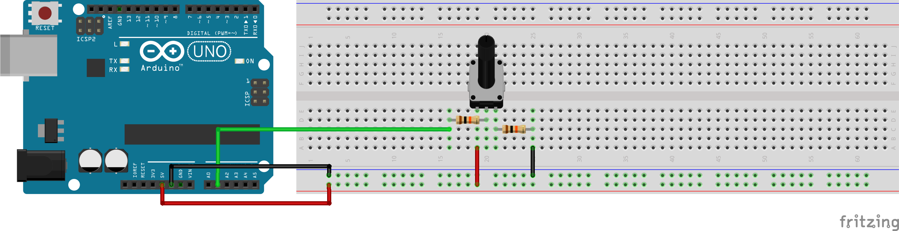
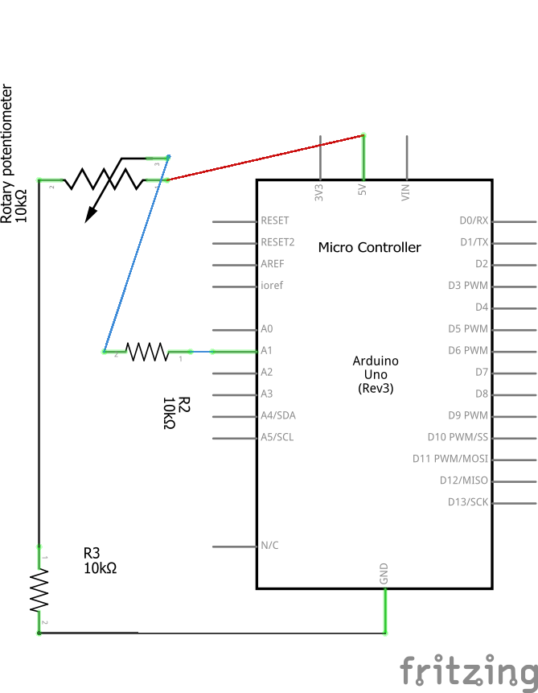
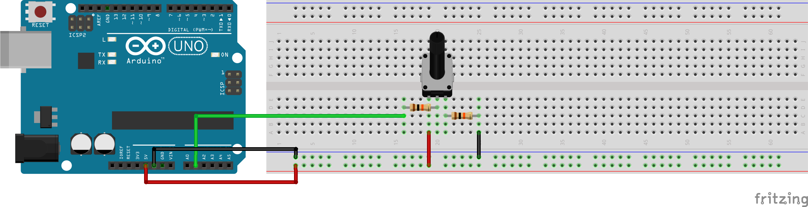
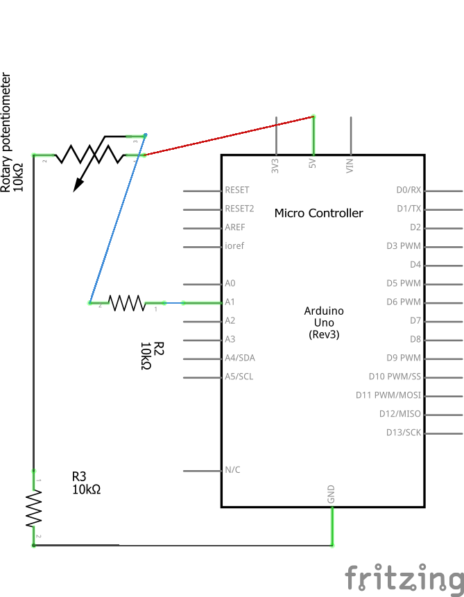
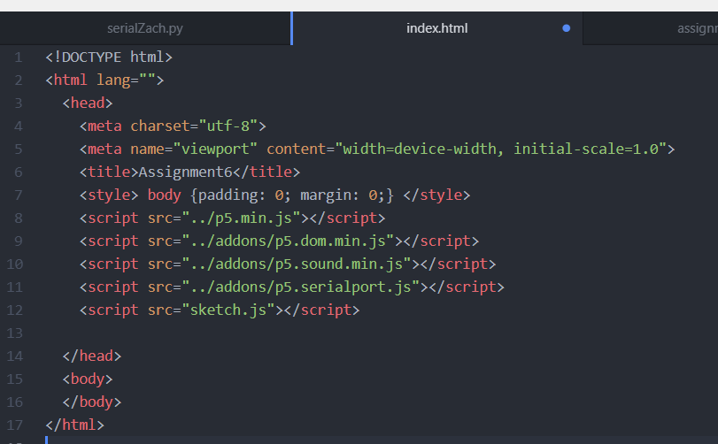

Zach Thomas Assignment 6!
 Here is the functionality of the circuit. As the potentiometer is turned the circle on the screen steadily changes from RGB(0,255,0) to RGB(0,0,255)

Here is a picture of the full circuitry

Here is a diagram of the circuit. There is a 10,000 ohm resistor betwen the potentiometer and ground as well as between the potentiometer and A1.
This prevents the arduino from having a short in the event of the potentiometer being turned all the way one direction or the other.
Here is the functionality of the circuit. As the potentiometer is turned the circle on the screen steadily changes from RGB(0,255,0) to RGB(0,0,255)

Here is a picture of the full circuitry

Here is a diagram of the circuit. There is a 10,000 ohm resistor betwen the potentiometer and ground as well as between the potentiometer and A1.
This prevents the arduino from having a short in the event of the potentiometer being turned all the way one direction or the other.
Arduino Code
//Zach Thomas
//HCDE 439: Physical Computing
//Winter 2019
void setup() {
Serial.begin(9600); //Setting up the serial functionality
}
void loop() {
int potentiometer = analogRead(1); //read the analog input from pin A1
Serial.println(potentiometer); //print the reading from pin A1 to serial
delay(50); //Wait 50 milliseconds.
index.html
sketch.js
var serial; // variable to hold an instance of the serialport library
var portName = 'com11' //rename to the name of your port
var datain; //some data coming in over serial!
var xPos = 0;
function setup() {
serial = new p5.SerialPort(); // make a new instance of the serialport library
serial.on('list', printList); // set a callback function for the serialport list event
serial.on('connected', serverConnected); // callback for connecting to the server
serial.on('open', portOpen); // callback for the port opening
serial.on('data', serialEvent); // callback for when new data arrives
serial.on('error', serialError); // callback for errors
serial.on('close', portClose); // callback for the port closing
serial.list(); // list the serial ports
serial.open(portName); // open a serial port
createCanvas(1200, 800);
background(0x08, 0x16, 0x40);
}
// get the list of ports:
function printList(portList) {
// portList is an array of serial port names
for (var i = 0; i < portList.length; i++) {
// Display the list the console:
print(i + " " + portList[i]);
}
}
function serverConnected() {
print('connected to server.');
}
function portOpen() {
print('the serial port opened.')
}
function serialError(err) {
print('Something went wrong with the serial port. ' + err);
}
function portClose() {
print('The serial port closed.');
}
function serialEvent() {
if (serial.available()) {
datain = Number(serial.readLine());
//console.log(datain);
}
}
function coloredCircle(data) {
var color = map(data, 0, 1024, 0, 255);
fill(0, color, 255 - color);
circle(200, 200, 200)
}
function draw() {
coloredCircle(datain);
}